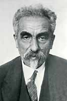

Tuesday, December the 22nd, 2009
back to: title, date or indexes
Another thing I learned from Koba The Dread was that Stalin, for a time, backed the theories of the linguist Nikolay Yakovlevich Marr (1865–1934). One of Marr's more amusing beliefs was that all words derive ultimately from the root sounds rosh, sal, ber and yon. (“Linguisticians who held otherwise”, Amis tells us, “were jailed or shot.”)
Dobson came across Marr's work at some point, and as a result produced what must be, by any measure, his most preposterous essay. In The FA Cup Final Of 1962 As It Might Have Been Reported By One Of Our Troglodyte Ancestors, the out of print pamphleteer “channels” the caveman mindset, as he sees it, and constructs a forty-four page text of blithering inanity. A (mercifully) brief extract will suffice:
Ber. Sal-ber. Yon yon yon. Rosh ber sal ber yon rosh ber. Ber. Sal rosh rosh, rosh. Yon. Yon sal rosh ber sal ber yon sal yon ber rosh rosh ber ber ber ber ber ber rosh yon. Sal.
And so it goes on. Unaccountably, this drivel scooped up no fewer than five prizes during 1963 and 1964, including the Prix Des Brochures Incroyable and the Pearl Carr And Teddy Johnson Glistening Golden Medal For Pamphlets Out Of Print Within Days Of Publication.

N Marr
Hooting Yard on the Air, January the 7th, 2010 : “Tear-Stained Letters” (starts around 13:08)